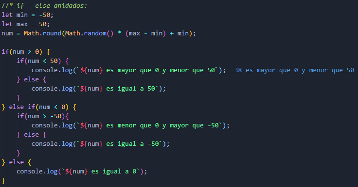

Estructura if - else:
Este es el tipo de condicional más comun usado en JavaScript y en otros lenguajes de programación. Su sintaxis es la siguiente:
- Condicional simple:
- Se da cuando solo se quiere que se ejecute el código si se cumple la condición.
- Condicional compuesto:
- Se da cuando el código tiene dos opciones: Si se cumple la condición se ejecuta una opción del código, de la contrario se ejecuta la otra opción de código.
- Condicional múltiple:
- Se da cuando el código tiene varias opciones: Si se cumple la condición se ejecuta la primer opción del código, de la contrario, si se cumple otra condición se ejecuta otra opción de código, de la contrario si no se cumple ninguna condición anterior se ejecuta una última opción de código.
Condicionales anidados:
Es posible insertar condicionales dentro de los mismos bloques de los condicionales.
Operadores lógicos Y y O:
Otra alternaativa la realizar múltiples condiciones sin escribir if...else anidados son los operadores lógicos:
- &&- Y:
- Permite encadenar dos o más expresiones para que todas tengan que evaluarse true individualmente para que se devuelva la expresión completa true.
- ||- O:
- Permite encadenar dos o más expresiones para que una o más de ellas tengan que evaluarse true individualmente para que se devuelva la expresión completa true.